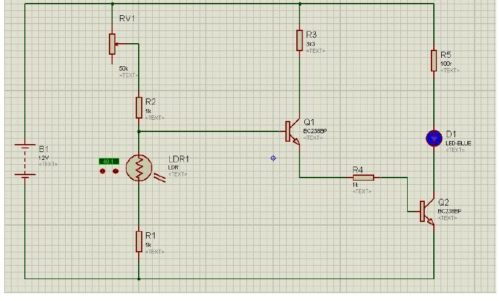
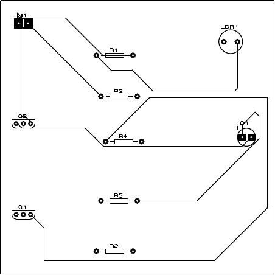

· STAJ
STAJ Yaz Stajı: Proteus ISIS/ARES ile LDR'li karanlıkta yanan LED devresi (şema, baskı devre ve proje dosyaları)
STAJ – Yaz Stajı · 07.10.2013 · 14.11.2026
Bu yazı, TCDD Elektronik Bakım Onarım Merkezi'ndeki yaz stajında sorumlu mühendisin Proteus programında anlattığı ISIS (şematik ve simülasyon) ve ARES (baskı devre) süreci üzerine, bir arkadaşın tasarladığı küçük bir örnek devreyi anlatıyor. Staj raporu için TCDD EBOM staj raporu yazısına bakabilirsiniz. Proje dosyaları (ISIS şeması .DSN, ARES yerleşimi .LYT ve baskı devre çıktısı .PDF) yazının sonunda ZIP olarak indirilebilir; Proteus ile açılır.
Devre: karanlıkta yanan LED
Devre, ortam ışığı azaldığında LED'i kendiliğinden yakar. LDR ve R1 bir gerilim bölücü oluşturur; ışık düştükçe LDR direnci artar ve Q1 transistörünün tabanındaki gerilim değişir, Q1 ve Q2 transistörleri LED akımını anahtarlar. RV1 potansiyometresi ile ışık eşiği ayarlanır.
| Eleman | Değer |
|---|---|
| B1 | 12 V pil |
| RV1 | 50 kΩ potansiyometre (eşik ayarı) |
| R1, R2, R4 | 1 kΩ |
| R3 | 3,3 kΩ |
| R5 | 100 Ω (LED seri direnci) |
| LDR1 | ışığa duyarlı direnç |
| Q1, Q2 | BC238BP (NPN) |
| D1 | mavi LED |

Baskı devre (ARES)
ARES'te aynı devre için tek yüzlü kart yerleşimi ve yollar oluşturuldu. Alttaki çıktı, proje klasöründeki baskı devre PDF'idir.

Not: Devre açıklaması şemadan çıkarılmıştır; kaynak belgede yalnızca şema, baskı devre ve \"karanlıkta kendi kendine yanan LED içeren bir LDR devresi\" tanımı vardır.